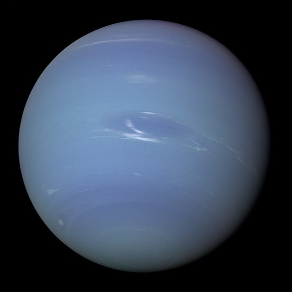

Sistema Solar
O nosso sistema solar é formado atualmente por 8 planetas, que orbitam o Sol por uma elipse, e por uma estrela, que é o centro dele e o corpo mais massivo do sistema solar, o Sol. Os quatro primeiros são planetas rochosos, (constituido majoritariamente por rochas), do qual a Terra faz parte, além de Mercúrio, Vênus e Marte.Os quatro últimos são planetas gassosos (constituido majoritariamente por poeira e gás), que são Júpter, Saturno, Urano e Neturno. Além desses corpos existem outros menores como planetas anões e asteróides.
A seguir temos uma breve descrição sobre cada um deles
Sol

O Sol é a estrela do sistema. Ele também é o corpo mais massivo que corresponde a 99,8% de toda massa do sistema solar. É composto principalmente por hidrogênio e Hélio ionizado, onde 71% é hidrogênio, e 27% Hélio. O Sol é o corpo central do sistema, e com isso todos os demais planetas orbitam ele. A temperatura no Sol é de cerca de 5778 graus.
| Tamanho | Rotação | Translação | Inclinação |
|---|---|---|---|
| 1.392.700 km | 27 dias | 219 milhões de anos | ------ |
Mercúrio

Mercúrio é o planeta mais próximo do Sol, também é o menor planeta do sistema solar, além ser ,junto com Vênus, um planeta que não possui satélites naturais. Mercúrio é também o segundo planeta mais denso do sistema solar.
| Tamanho | Rotação | Translação | Inclinação |
|---|---|---|---|
| 4.879,4 km | 59 dias | 87,97 dias | 7 graus |
Vênus

Vênus é o segundo planeta do sistema solar, é também o planeta mais próximo da Terra. Vênus também é o planeta mais quente do sistema solar devido a um sistema de efeito estufa presente no planeta. É possível ver Vênus a olho nú, a partir da Terra como uma estrela, também conhecida como estrela Dalva.
| Tamanho | Rotação | Translação | Inclinação |
|---|---|---|---|
| 12.104 km | 243 dias | 224 dias | 177,3 graus |
Terra

A Terra é o terceiro planeta do sistema solar, também é nossa casa, e um planeta bem especial por ser ,até onde sabemos, o único planeta com vida. A Terra possui um satélite natural conhecido como lua. A terra é o maior planeta dentre os rochosos do sistema solar e um planeta caracterizado principalmente pela presença de água que dá uma coloração azulada ao palneta.
| Tamanho | Rotação | Translação | Inclinação |
|---|---|---|---|
| 12.742 km | 1 dia | 365 dias | 23.5 graus |
Marte

Marte é o quarto planeta do sistema solar, e último planeta dentre os panetas rochosos. Marte tem uma coloração vermelha devido a presença predominante de minérios de ferro. Possui dois satélites naturais os quais se chamam Deimos e Fobos. Assim como vênus ele também é visível a olho nú aqui da Terra, e ,ainda em relação a Vênus, possui uma temperatura bem mais amena, apesar de variar bastante, oscilando entre -125 a 22 graus Celsius
| Tamanho | Rotação | Translação | Inclinação |
|---|---|---|---|
| 6.779 km | 24 h 37 min 22 s | 1,88 anos | 25 graus |
Júpiter

Júpiter é o quinto planeta do sistema solar, é também o maior planeta do sistema solar, além de ser o mais massivo. Júpiter também faz parte dos planetas gassosos, onde a maior parte do planeta é constituida de poeira e gás. Júpiter possui 79 satélites naturais, os quais destacam-se Europa, Ganímedes, Lo e Calisto, onde Europa destaca-se pela presença de um oceano abaixo da crosta de gelo. Júpiter possui uma temperatura na superfície de cerca de 67 graus Celsius na altura da superfície.
| Tamanho | Rotação | Translação | Inclinação |
|---|---|---|---|
| 139.820 km | 9 horas e 50 minutos | 11,86 anos | 3.12 graus |
Saturno

Saturno é o sexto planeta do sistema solar, também é o segundo maior planeta do sistema solar, ficando apenas atrás de Jupiter. Apesar do tamanho, saturno é o planeta menos denso do sistema solar. Saturno é muito caracterizado por seus aneis, (Conjunto de rochas e gelo que orbitam o planeta muito próximos de si de forma que objervando de longe parece um anel contínuo) sendo os maiores aneis do sistema solar. Recentemente foram descobertas mais 20 luas em saturno, o que o deixou com 82 satélites naturais sendo assim o planeta com masi luas no sistema solar. Saturno tem em média de -138 graus Celsius.
| Tamanho | Rotação | Translação | Inclinação |
|---|---|---|---|
| 116.460 km | 10,7 horas | 29,46 anos | 26,73 graus |
Urano

Urano é o sétimo planeta do sistema solar, É caracetrizado pela sua cor esverdeada, devido ao gás metano, muito presente na atmosfera. Possui um eixo de inclinação bem elevado, fazendo com que seus polos fiquem mais voltados aosol do que qualquer outro planeta. Urano possui um total de 27 satélites naturais, como exemplo, Umbriel, Titânia, Oberon, Miranda, dentre outros, que foram retirados de nomes de personagens da obra de William Shakespeare. Urando tem uma temperatura de cerca de -195 graus Celsius.
| Tamanho | Rotação | Translação | Inclinação |
|---|---|---|---|
| 50.724 km | 18 horas | 84 anos | 98 graus |
Netuno
Netuno é o último planeta do sistema solar. Netuno foi descoberto devido a cálculos matemáticos e não a observações como os outros planetas, uma anomalia na orbita de Urano só poderia ser explicada pela presença do planeta. Netuno, possui uma cor azulada também devido ao metano. Netuno possui 14 luas, como tritão, hipocampo, proteu, etc. A temperatura em média em netuno é de -245 graus Celsius
| Tamanho | Rotação | Translação | Inclinação |
|---|---|---|---|
| 49.244 km | 16 horas | 164 anos | 28,3 graus |

Imagem de Manvendra Singh por Pixabay